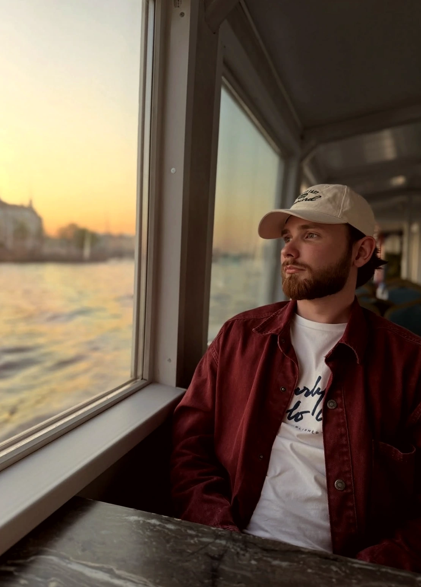

Профиль / 01
О себе.

Привет, я Никита.
Графический дизайнер.
Интересуюсь айдентикой, фирменным оформлением, печатной продукцией и визуальными коммуникациями. В работе важно находить выразительную форму, которая поддерживает идею проекта и остаётся понятной в применении.
В этом портфолио собраны пять проектов: от логотипов и упаковки до визуальной концепции продукта и выставочного пространства.
Инструменты
Adobe PhotoshopAdobe IllustratorFigmaCanva
Образование
СПГУПТД
2022 — 2027
Профессиональный фокус
Графический дизайн / айдентика / упаковка / печатная графика / визуальные коммуникации
Мой принцип
Посмотреть проекты ↘Сначала смысл и задача. Затем визуальная форма, типографика и детали.